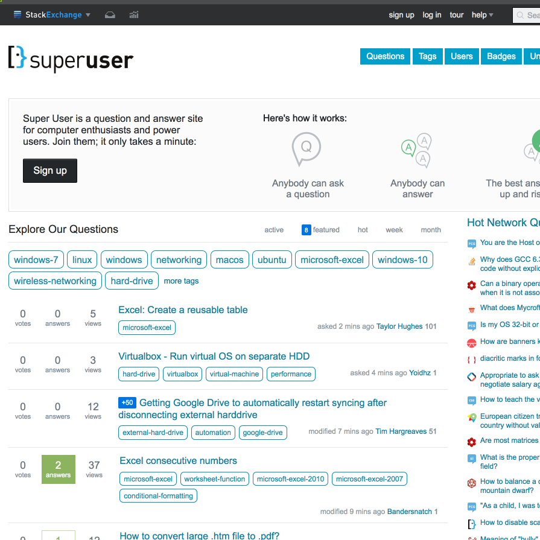

Final Report
Information Visualization Lab Project
Mario Fellinger
Patrick Mörtenböck
Dataset
The Dataset consists of questions,answers and comments and their attributes asked on superuser.com in the year 2016

User Tasks
- What were the most used tags throughout the year 2016?
- How often were these tags used?
- How many comments and answers did questions get with a specific tag?
- How often were questions with a specific tag marked as favorite?
- How big is the total score of all questions tagged with a specific tag?
- How many views did a questions get with a specific tag?
- What is the ranking of tags depending on the attributes explained in the questions above?
- What tags were used together frequently?
- How often where these tags used together?
Dashboard
We used D3.js Version 4.0 and plain Javascript to implement the dashboard. On the one hand we used a node-link-diagram and a forceLayout to show the tags as circles and connect them if selected (User Tasks 8 and 9). The circles' radii are encoded to the value depending the selected attribute (count, comments, answers, ... see User Tasks 1 to 6).
In order to compare the tags or their attributes with each other we implemented a bar chart that shows the exact attribute values and sorts them (User Task 7).
Limitations
We experienced several limitations:
- Too many tags: basically we wanted to show all used tags of the year 2016, but that are more than 1000, what is impossible to present in a node-link-diagram on a normal screen. So we decided to only use the 50 most used tags.
- Too many connections: As we used only the top 50 tags of the dataset, we got in trouble visualizing the tags that were used together. The simple reason is, that nearly every tag of the top 50 was used with each other at least once. So we decided to just show a connection if two tags were used more often than 50 times.
THE general limitation visualizing something with a node-link-diagram is the size of the presentation device. The more space to present the more nodes can be shown. As a result of that the problem with the too many connections wouldn't be that bad.
The solutions answers the users to answer the tasks in the following way:
- 1. The most used tags throughout the year 2016 are simply the tags shown as circles or in the bar chart.
- 2.-6. After selecting the button with the desired attribute one can hover over a circle to see a tooltip with the exact number occurances/comments/answers/...
- 7. The order of the tags depending on the selected button is shown in the bar chart.
- 8. To see what other tags were used with a specific tag, one has to press the node belonging to that tag. Immediately every node gets connected to the selected one.
- 9. To get the exact number how often two tags were used together a tooltip is shown whenever a link is hovered.